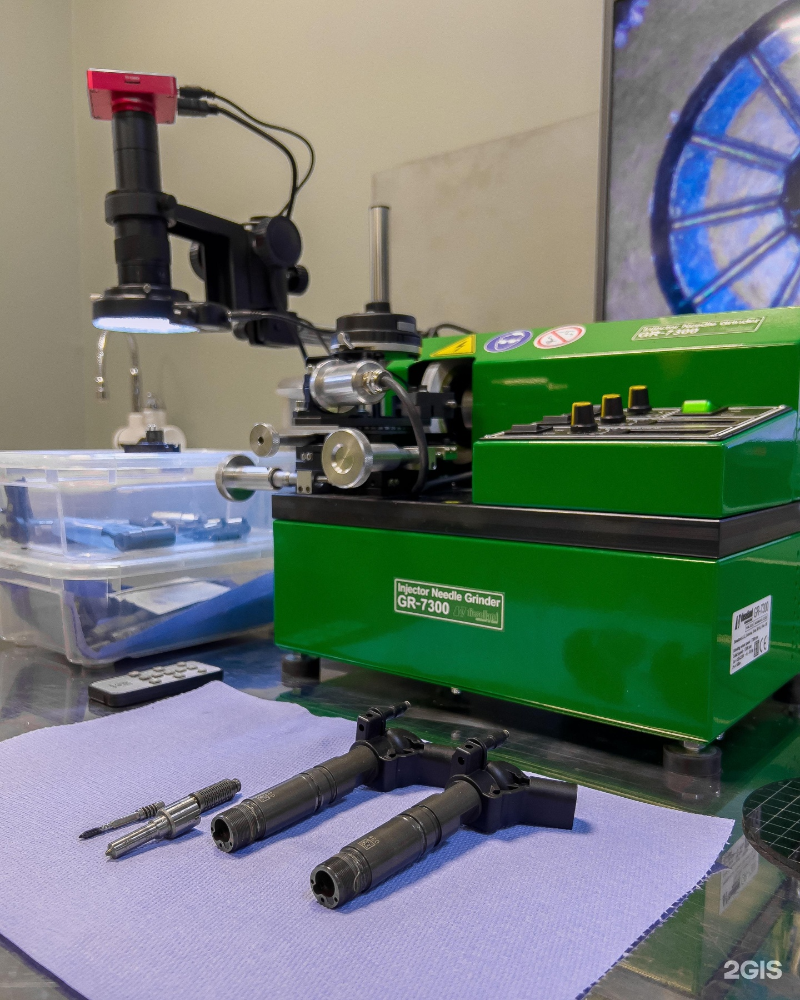

Завеличье
Мастер Дизель Псков
Дизельный двигатель и топливная система: диагностика и ремонт
+7 (921) 003-03-08ТелефонРемонт дизельных двигателей и топливной системы, компьютерная диагностика и ремонт АКПП. Обсудите неисправность по телефону.
Адрес
Псков, Сосновая улица, 9, 1 этаж
Часы работы
Пн–Вс 10:00–21:00
Демо-концепт · текущий прайс ещё не подтверждён
Направления
С чем можно обратиться
Компьютерная диагностика автомобилей
Уточняйте по телефонуРемонт дизельной топливной системы
Уточняйте по телефонуРемонт АКПП
Уточняйте по телефонуПрайс
Услуги и цены
Фотографии
Рабочие места и оборудование
Фотографии из карточки бизнеса. Снимки не подтверждают актуальность цен.

Отзывы
Что отмечают посетители
В одном отзыве посетитель положительно оценивает обращение в сервис по ремонту дизелей.
Полный отзыв в 2ГИСДругой клиент рассказывает, что автомобиль вернули раньше согласованного срока и заодно устранили небольшие недочёты.
Полный отзыв в 2ГИСЕщё один посетитель доволен результатом ремонта, но отмечает ожидание заказных деталей и очередь.
Полный отзыв в 2ГИСПересказ субъективных мнений без имён авторов. Полные отзывы — в 2ГИС.
Контакты
Адрес и связь
Часы работы
Пн–Вс 10:00–21:00
Телефон+7 (921) 003-03-08
Обсудите неисправность с сервисом
Позвонить